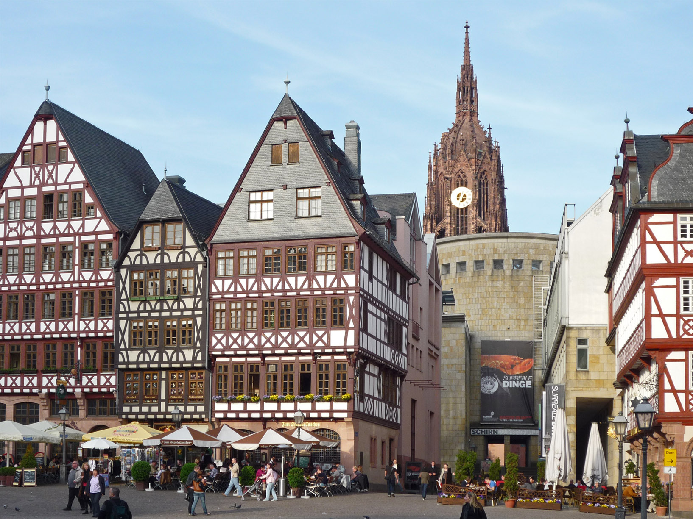
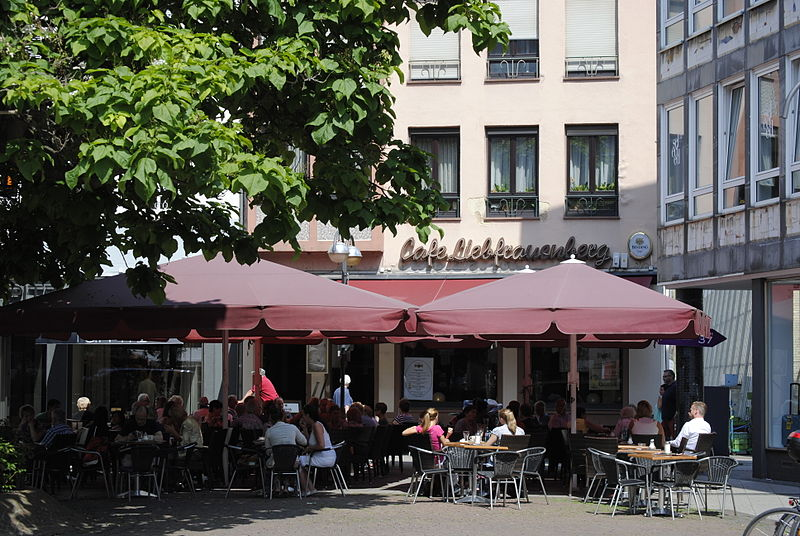

Frankfurt is one of the most important finacial hubs in the world, offering a wide range of restaurants, cafes and bars.
Frankfurt is well-known for its nightlife, offering many different types of bars and beer halls. Frankfurt offers a selection of beer halls.

Frankfurt has a great selection of German cusine.Zum Glucksberg offers great Schnitzel and Spatzle and is located on the Romerberg.
Frankfurt's cafes offer a great selection of cake and coffee for all ages. Cafe Liebfrauenberg is a wonderful and peaceful place to enjoy a wonderful afternoon.
Frankfurt is a great place to experience Germany's traditional culture!